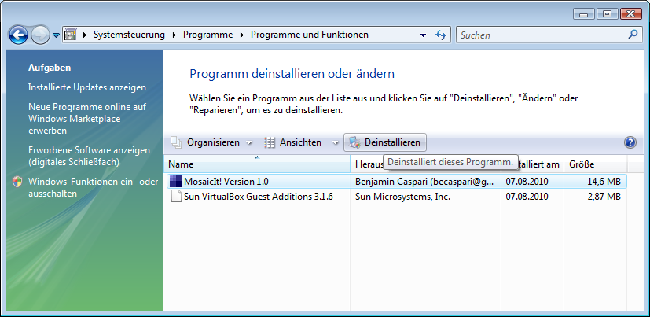

1. Installation und Systemanforderungen
MosaicIt! läuft unter Windows XP, Vista, Windows 7 und Linux. Zur
Installation werden 20MB Speicherplatz auf der Festplatte benötigt. Ihr
Rechner sollte über mindestens 256MB Arbeitsspeicher verfügen. Für Ihre
Fotosammlung und die erstellten Mosaiks benötigen Sie weiteren
Speicherplatz.
Bitte beachten Sie, dass in Abhängigkeit von den gewählten Optionen
deutlich mehr als 256MB Arbeitsspeicher benötigt werden, um ein großes
Mosaik in einer akzeptablen Zeit zu rendern. Ein Fotomosaik mit 60
Megapixeln zu erstellen benötigt bis zu 300MB Arbeitsspeicher und bis
zu 15 Minuten Rechenzeit auf einem etwas älteren AMD Athlon XP mobile
2600+.
Führen Sie einfach die setup.exe-Datei aus und folgen Sie den
Anweisungen, um MosaicIt! auf Ihrem Computer zu installieren. Sie
benötigen dazu mindestens 20MB freien Speicherplatz.
Jetzt können Sie das Programm durch Auswählen des Eintrags im
Windows-Startmenü starten.
Sie haben zwei Möglichkeiten, um MosaicIt! von Ihrem Rechner zu
entfernen: Entweder Sie wählen den entsprechenden Eintrag im Startmenü
oder Sie öffnen die Systemsteuerung, dann das "Programme"-Fenster und
entfernen MosaicIt! dort:
